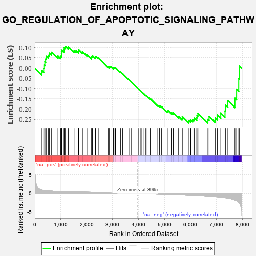
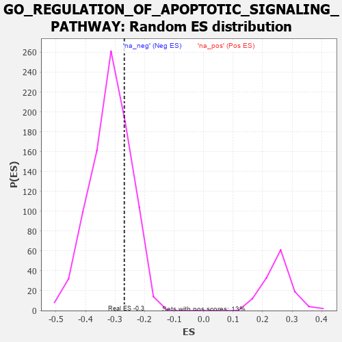

| | | Dataset | 7d |
| Phenotype | NoPhenotypeAvailable |
| Upregulated in class | na_neg |
| GeneSet | GO_REGULATION_OF_APOPTOTIC_SIGNALING_PATHWAY |
| Enrichment Score (ES) | -0.26867107 |
| Normalized Enrichment Score (NES) | -0.85004854 |
| Nominal p-value | 0.7583429 |
| FDR q-value | 0.980852 |
| FWER p-Value | 1.0 |
Table: GSEA Results Summary

Fig 1: Enrichment plot: GO_REGULATION_OF_APOPTOTIC_SIGNALING_PATHWAY
Profile of the Running ES Score & Positions of GeneSet Members on the Rank Ordered List
| PROBE | GENE SYMBOL | GENE_TITLE | RANK IN GENE LIST | RANK METRIC SCORE | RUNNING ES | CORE ENRICHMENT | | 1 | HGF | | | 276 | 0.870 | -0.0130 | No |
| 2 | DAPK2 | | | 343 | 0.754 | -0.0024 | No |
| 3 | GSK3A | | | 351 | 0.745 | 0.0155 | No |
| 4 | BAX | | | 387 | 0.711 | 0.0290 | No |
| 5 | RAD9A | | | 418 | 0.681 | 0.0423 | No |
| 6 | RRN3 | | | 438 | 0.667 | 0.0568 | No |
| 7 | HTRA2 | | | 527 | 0.621 | 0.0612 | No |
| 8 | NLE1 | | | 565 | 0.609 | 0.0719 | No |
| 9 | NOC2L | | | 647 | 0.578 | 0.0762 | No |
| 10 | HMGB2 | | | 892 | 0.507 | 0.0581 | No |
| 11 | DEDD2 | | | 999 | 0.484 | 0.0569 | No |
| 12 | AKT1 | | | 1040 | 0.476 | 0.0638 | No |
| 13 | YAP1 | | | 1041 | 0.475 | 0.0758 | No |
| 14 | TAF9 | | | 1046 | 0.475 | 0.0872 | No |
| 15 | SRC | | | 1128 | 0.459 | 0.0885 | No |
| 16 | NCK2 | | | 1131 | 0.458 | 0.0998 | No |
| 17 | TFDP1 | | | 1180 | 0.450 | 0.1051 | No |
| 18 | PARL | | | 1290 | 0.432 | 0.1021 | No |
| 19 | INHBB | | | 1514 | 0.388 | 0.0837 | No |
| 20 | ERP29 | | | 1589 | 0.376 | 0.0838 | No |
| 21 | WWOX | | | 1688 | 0.359 | 0.0804 | No |
| 22 | HYOU1 | | | 1692 | 0.358 | 0.0890 | No |
| 23 | GATA4 | | | 1837 | 0.330 | 0.0791 | No |
| 24 | RAF1 | | | 2011 | 0.303 | 0.0648 | No |
| 25 | MEIS3 | | | 2188 | 0.278 | 0.0495 | No |
| 26 | ATAD5 | | | 2197 | 0.277 | 0.0555 | No |
| 27 | TRAP1 | | | 2219 | 0.274 | 0.0597 | No |
| 28 | FAF1 | | | 2340 | 0.255 | 0.0509 | No |
| 29 | MIF | | | 2357 | 0.252 | 0.0553 | No |
| 30 | KDM1A | | | 2447 | 0.237 | 0.0500 | No |
| 31 | BECN1 | | | 2828 | 0.179 | 0.0063 | No |
| 32 | DAPK3 | | | 2880 | 0.169 | 0.0041 | No |
| 33 | PDCD5 | | | 2885 | 0.169 | 0.0079 | No |
| 34 | ACVR1 | | | 2932 | 0.161 | 0.0061 | No |
| 35 | WNT4 | | | 3023 | 0.146 | -0.0016 | No |
| 36 | PIAS4 | | | 3034 | 0.145 | 0.0008 | No |
| 37 | BIRC6 | | | 3047 | 0.143 | 0.0028 | No |
| 38 | HDAC1 | | | 3086 | 0.138 | 0.0015 | No |
| 39 | GPX1 | | | 3109 | 0.135 | 0.0021 | No |
| 40 | SMAD3 | | | 3303 | 0.105 | -0.0197 | No |
| 41 | DDX3X | | | 3388 | 0.091 | -0.0280 | No |
| 42 | FIS1 | | | 3654 | 0.051 | -0.0603 | No |
| 43 | NF1 | | | 3713 | 0.040 | -0.0667 | No |
| 44 | EYA1 | | | 3987 | -0.006 | -0.1011 | No |
| 45 | PARP1 | | | 4014 | -0.010 | -0.1042 | No |
| 46 | SFRP2 | | | 4065 | -0.018 | -0.1101 | No |
| 47 | TRAF1 | | | 4104 | -0.024 | -0.1143 | No |
| 48 | PDX1 | | | 4179 | -0.038 | -0.1227 | No |
| 49 | PSME3 | | | 4280 | -0.056 | -0.1340 | No |
| 50 | OPA1 | | | 4330 | -0.065 | -0.1385 | No |
| 51 | SYVN1 | | | 4454 | -0.085 | -0.1520 | No |
| 52 | LRRK2 | | | 4467 | -0.087 | -0.1513 | No |
| 53 | PDIA3 | | | 4740 | -0.147 | -0.1821 | No |
| 54 | TERT | | | 4801 | -0.157 | -0.1857 | No |
| 55 | FBXW7 | | | 4816 | -0.161 | -0.1834 | No |
| 56 | CLU | | | 4889 | -0.174 | -0.1881 | No |
| 57 | MMP9 | | | 5108 | -0.227 | -0.2100 | No |
| 58 | FLCN | | | 5140 | -0.235 | -0.2080 | No |
| 59 | PTEN | | | 5262 | -0.261 | -0.2168 | No |
| 60 | SGK3 | | | 5338 | -0.282 | -0.2192 | No |
| 61 | FGFR1 | | | 5543 | -0.332 | -0.2367 | No |
| 62 | CASP8 | | | 5678 | -0.369 | -0.2443 | No |
| 63 | MADD | | | 5686 | -0.371 | -0.2359 | No |
| 64 | PCGF2 | | | 5943 | -0.451 | -0.2570 | Yes |
| 65 | XBP1 | | | 6011 | -0.475 | -0.2535 | Yes |
| 66 | UBB | | | 6090 | -0.503 | -0.2507 | Yes |
| 67 | STK4 | | | 6145 | -0.518 | -0.2445 | Yes |
| 68 | VDAC2 | | | 6242 | -0.553 | -0.2427 | Yes |
| 69 | TFAP4 | | | 6254 | -0.556 | -0.2301 | Yes |
| 70 | TRAF7 | | | 6290 | -0.571 | -0.2201 | Yes |
| 71 | RFFL | | | 6674 | -0.749 | -0.2498 | Yes |
| 72 | GSK3B | | | 6719 | -0.768 | -0.2360 | Yes |
| 73 | DNM1L | | | 6963 | -0.913 | -0.2438 | Yes |
| 74 | RNF34 | | | 7040 | -0.963 | -0.2291 | Yes |
| 75 | AR | | | 7169 | -1.046 | -0.2190 | Yes |
| 76 | CYLD | | | 7333 | -1.206 | -0.2092 | Yes |
| 77 | WDR35 | | | 7357 | -1.225 | -0.1812 | Yes |
| 78 | CASP2 | | | 7442 | -1.322 | -0.1585 | Yes |
| 79 | BOK | | | 7715 | -1.817 | -0.1472 | Yes |
| 80 | ST18 | | | 7780 | -2.007 | -0.1047 | Yes |
| 81 | TRAF2 | | | 7861 | -2.481 | -0.0523 | Yes |
| 82 | FYN | | | 7881 | -2.622 | 0.0114 | Yes |
Table: GSEA details [plain text format]

Fig 2: GO_REGULATION_OF_APOPTOTIC_SIGNALING_PATHWAY: Random ES distribution
Gene set null distribution of ES for GO_REGULATION_OF_APOPTOTIC_SIGNALING_PATHWAY